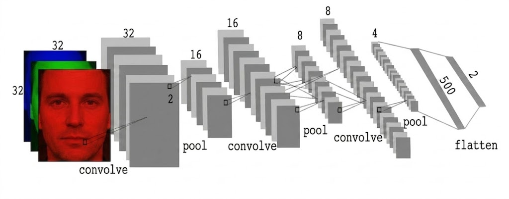
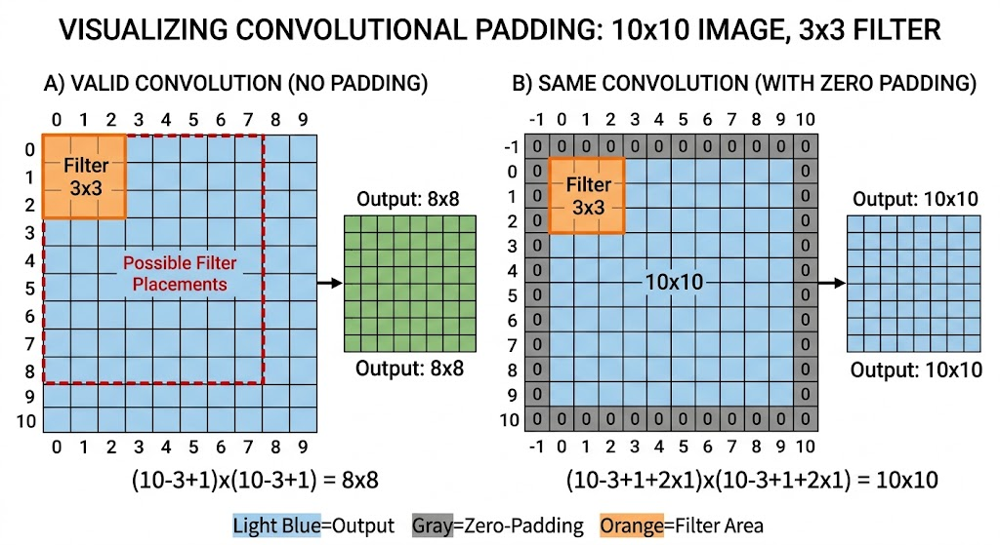
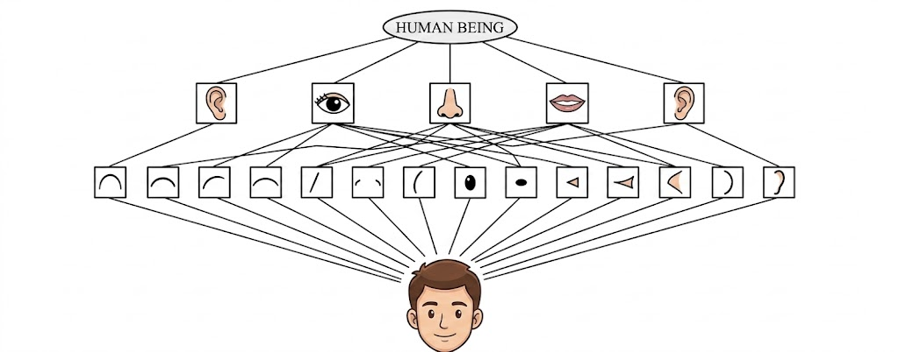

The MLP is the foundation we covered in the previous section. A Convolutional Neural Network (CNN) is yet another kind of Neural Network, where layer processing is a mathematical operation called convolution. The basic idea is to divide the input into overlapping 2D image patches and to compare each patch with a set of small weight matrices, or filters, which represent parts of an object; this is shown below. We can think of this as a form of template matching.
The primary failure of the Multi-Layer Perceptron (MLP) in image processing is its lack of Spatial Topology. When an image is flattened into a 1D vector to fit an MLP’s input layer, the physical proximity between pixels is destroyed; a pixel's neighbor to the right or bottom is suddenly shifted thousands of indices away. This forces the MLP to learn the relationship between every single pixel globally, leading to a Parameter Explosion. For instance, a high-definition image would require billions of weights for just one hidden layer, exceeding the memory capacity of most hardware. Furthermore, MLPs lack Translation Invariance; if the network learns to recognize a feature in the top-left, it will not recognize that same feature in the bottom-right because the weights are tied to specific, static pixel coordinates. Finally, as you noted, the Fixed-Input Constraint is a major hurdle: MLPs require a hard-coded number of input neurons, making them incapable of processing variable image sizes without destructive resizing.
Pixels 1, 2, and 4 are neighbors.
Topology Broken: Pixel 4 is no longer "near" Pixel 1.
To overcome the parameter explosion and loss of topology in MLPs, we shift our focus from global connectivity to local feature detection. This is achieved through Weight Sharing.
When dealing with image data, we can apply the same weight matrix to each local patch of the image in order to reduce the number of parameters. If we “slide” this weight matrix over the image and add up the results, we get a technique known as convolution; in this case the weight matrix is often called a “kernel” or “filter.”
More precisely, let $X \in \mathbb{R}^{H \times W}$ be the input image, and $W \in \mathbb{R}^{h \times w}$ be the kernel. The output is denoted by $Z = X \circledast W$, where (ignoring boundary conditions) we have the following mathematical definition:
Essentially, we compare a local patch of $X$, of size $h \times w$ and centered at $(i,j)$, to the filter $W$. The output $Z_{i,j}$ measures the similarity between the input patch and the filter's learned pattern.
While the convolution formula above defines the mathematical "how," the motivation lies in capturing Spatial Local Correlations. In an MLP, every neuron is connected to every pixel, which is computationally expensive and ignores the fact that pixels are only meaningful in relation to their immediate neighbors. By using local kernels, we ensure the network focuses on these relationships first, drastically reducing parameters while granting the model Translation Invariance—the ability to recognize a pattern regardless of where it appears in the frame.
Building on this mathematical foundation, a Convolutional Neural Network (CNN) is a deep learning architecture designed to automatically and adaptively learn spatial hierarchies of features. It sequences multiple layers of convolution and specialized operations to transform raw pixel data into sophisticated, high-level semantic representations.
CNN involves several convolutions before the raw pixels becomes a probability as shown in Figure 1. Convolution in these layers are multi-filter and multi-channel operations.
A standard CNN is composed of many layers stacked sequentially. Within each layer, we don't apply just one filter; we apply a bank of several filters (e.g., 32, 64, or 128) simultaneously.
Each filter acts as a specialized feature detector. Because a single filter can only learn to recognize one specific pattern—such as a vertical edge or a specific color gradient—a single-filter layer would be "blind" to all other visual information. By using a large bank of filters, the network can:
When processing a color image, the kernels are three-dimensional. For an input with RGB channels, each filter also has three channels. The convolution is performed as follows:
Where:
\(C\) = Number of Input Channels (e.g., 3 for RGB)
\(K_H, K_W\) = Kernel Height and Width (e.g., 3 × 3)
\(b\) = Learned Bias term
Crucially, the outputs of these three channels are added together as shown in the Figure (along with a bias term) to produce a single, unified 2D feature map for that specific filter. If a layer has 64 filters, the output will be a stack of 64 feature maps, forming the input for the next layer.

Convolving a 10 x 10 image with a 3 x 3 filter results in an 8 x 8 output. In general, convolving an $h \times w$ filter over an image of size $m \times n$ produces an output of size:
This is called valid convolution since we only apply the filter to "valid" parts of the input (we don’t let it "slide off the ends"). However, this causes the spatial dimensions to shrink with every layer.

If we want the output to have the same size as the input, we can use zero-padding, which involves adding a border of 0s around the image. This is referred to as same convolution.
Because neighboring outputs share overlapping inputs, they are often very similar. We can reduce this redundancy and speed up computation by skipping every $s$-th input. This is called Strided Convolution.
Where $X$ is input size, $P$ is padding, $F$ is filter size, and $S$ is stride.
Example Calculation:
For a $5 \times 7$ image, a $3 \times 3$ filter, no padding ($P=0$), and a stride of $S=2$:
Architect's Note: Increasing the stride is a powerful way to reduce the "spatial footprint" of your feature maps as you go deeper into the network.
As illustrated in the pipeline above, Pooling Layers (typically Max Pooling) are the "editors" of the network. While convolution detects features, pooling serves as Spatial Downsampling. By taking the maximum value in a $2 \times 2$ or $3 \times 3$ window, the network achieves two goals:
The "intelligence" of a CNN emerges from how these layers are stacked. This creates a Cognitive Hierarchy where the network learns to "see" in stages.

The first layers act as Edge Detectors. Because these kernels are shared across the image, they learn basic geometric primitives. As we move deeper into the network, the Forward Pass combines these edges into Part Detectors (like whiskers or ears) and finally into Entity Detectors that represent the entire object.
Once the spatial features have been extracted and downsampled, the 3D maps are Flattened into a 1D vector. This vector is fed into the final "Dense" layers of the network.
For a binary classification task (e.g., Face vs. No-Face), the last layer consists of 2 output neurons. These neurons use a Softmax function to translate the abstract features into a probability distribution. If the "Face" neuron fires at 0.95 and the "No-Face" at 0.05, the network has successfully translated millions of raw pixels into a single, high-confidence identification.
While both are built from neurons and weights, their mathematical "engines" process data through fundamentally different operations.
| Feature | Multi-Layer Perceptron (MLP) | Convolutional Neural Network (CNN) |
|---|---|---|
| Mathematical Operation | Matrix Multiplication: $Z = W \cdot A + b$. The operation between W and A is a dot-product of the entire input vector. | Convolution: $Z = W * A + b$. The operation between W and A is a local sliding-window dot-product. |
| Connectivity | Fully Connected: Every input unit connects to every hidden neuron. | Locally Connected: Neurons only connect to a small local region (kernel). |
| Parameter Efficiency | Total weights scale linearly with input size (leading to parameter explosion). | Weight Sharing: The same filter is reused across the entire image. |
| Spatial Awareness | None. Data must be "flattened." The network is "Index-Bound." | Excellent. Maintains spatial hierarchy and is Translation Invariant. The network is "Pattern-Bound." |
In a CNN, the Backward Pass is the process of passing error maps backward through the spatial dimensions. To satisfy the Algorithm: Adam_Optimization_Update, we must calculate the gradients ($g_t$) by reversing the Forward Pass step-by-step.
For each filter $k$, we sum convolutions across all input channels $c$ and apply final normalization:
$$A_{i,j,k}^{[l]} = \text{ReLU}(Z_{i,j,k}^{[l]})$$
$$dZ^{[L]} = P_{actual} - y_{expected}$$
$$dZ_{i,j,k}^{[l]} = dA_{i,j,k}^{[l]} \cdot f'(Z_{i,j,k}^{[l]})$$
In the forward pass, we slide the filter over the input. To go backwards, we mathematically flip the operation. We use Full Padding to ensure the output error map has the same dimensions as the original input $A^{[l-1]}$.
dA_prev = signal.convolve2d(dZ, kernel, mode='full')
This is mathematically equivalent to convolving the input $A^{[l-1]}$ with the error map $dZ$. It aligns the error found at each "look" with the pixel that caused it.
dW = signal.convolve2d(A_prev, dZ, mode='valid')
To truly understand the "mechanical engine" of a CNN, we can implement the forward and backward passes using nested loops. This avoids external libraries and shows exactly how the Weight Sharing and Valid Convolution we discussed are translated into code.
import random # Only for initialization class AdamOptimizer: def __init__(self, learning_rate=0.001, b1=0.9, b2=0.999, epsilon=1e-8): self.eta = learning_rate self.b1, self.b2 = b1, b2 self.epsilon = epsilon self.m = None self.v = None self.t = 0 def update(self, weights, gradients): if self.m is None: self.m = [[0.0 for _ in row] for row in weights] self.v = [[0.0 for _ in row] for row in weights] self.t += 1 new_w = [[0.0 for _ in row] for row in weights] for i in range(len(weights)): for j in range(len(weights[0])): g = gradients[i][j] # 1. Moment Updates self.m[i][j] = self.b1 * self.m[i][j] + (1 - self.b1) * g self.v[i][j] = self.b2 * self.v[i][j] + (1 - self.b2) * (g**2) # 2. Bias Correction m_hat = self.m[i][j] / (1 - self.b1**self.t) v_hat = self.v[i][j] / (1 - self.b2**self.t) # 3. Parameter Update new_w[i][j] = weights[i][j] - (self.eta * m_hat) / (v_hat**0.5 + self.epsilon) return new_w class ConvLayer: def __init__(self, kernel_size): # Small random initialization self.kernel = [[random.uniform(-0.1, 0.1) for _ in range(kernel_size)] for _ in range(kernel_size)] self.optimizer = AdamOptimizer() def forward(self, image): self.last_input = image h, w = len(image), len(image[0]) kh, kw = len(self.kernel), len(self.kernel[0]) output = [[0.0 for _ in range(w-kw+1)] for _ in range(h-kh+1)] # Standard 2D Convolution (Sliding Window) for i in range(h-kh+1): for j in range(w-kw+1): sum_val = 0 for ki in range(kh): for kj in range(kw): sum_val += image[i+ki][j+kj] * self.kernel[ki][kj] output[i][j] = sum_val return output def backward(self, d_out): kh, kw = len(self.kernel), len(self.kernel[0]) d_kernel = [[0.0 for _ in range(kw)] for _ in range(kh)] # Compute dL/dW (Valid Convolution between Input and Error Map) for i in range(kh): for j in range(kw): for oi in range(len(d_out)): for oj in range(len(d_out[0])): d_kernel[i][j] += self.last_input[i+oi][j+oj] * d_out[oi][oj] # Update kernel weights using Adam self.kernel = self.optimizer.update(self.kernel, d_kernel) return d_kernel
backward method uses self.last_input. This confirms our derivation that the gradient for the weights depends directly on the values seen during the forward pass.